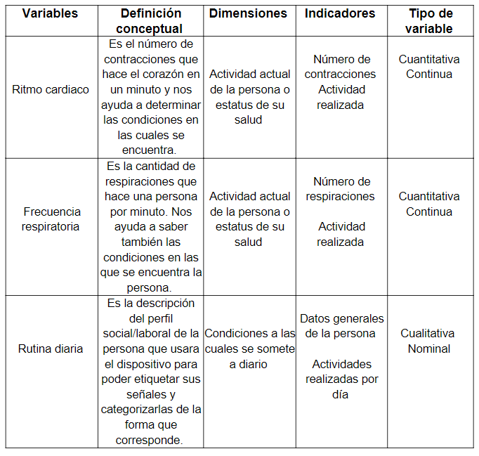
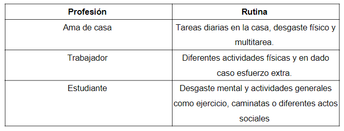
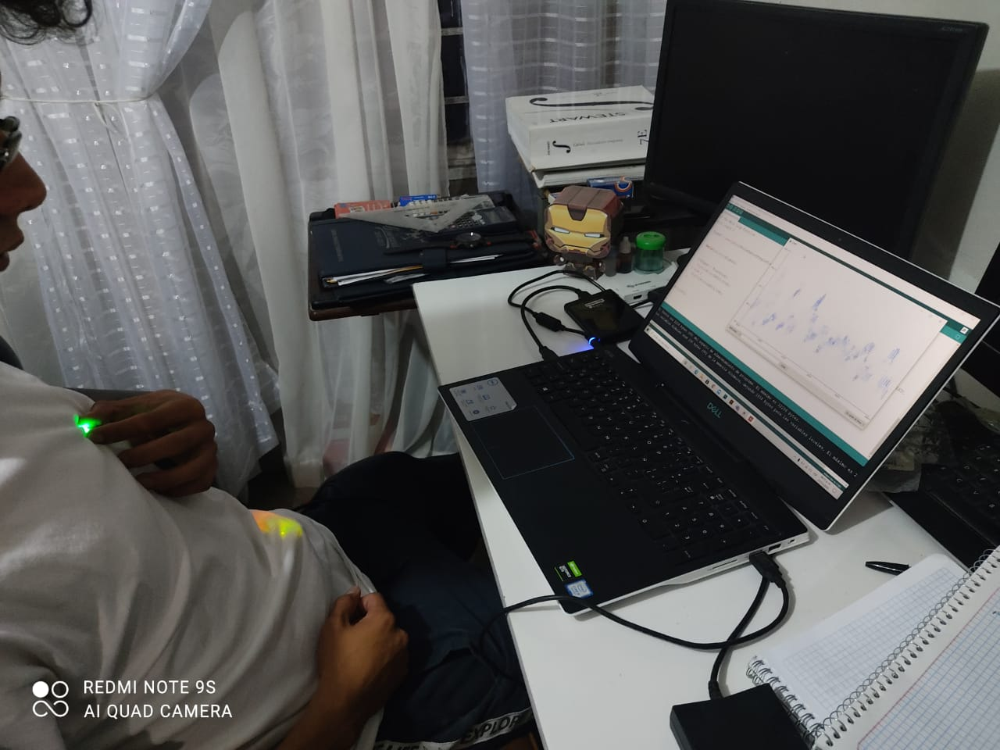
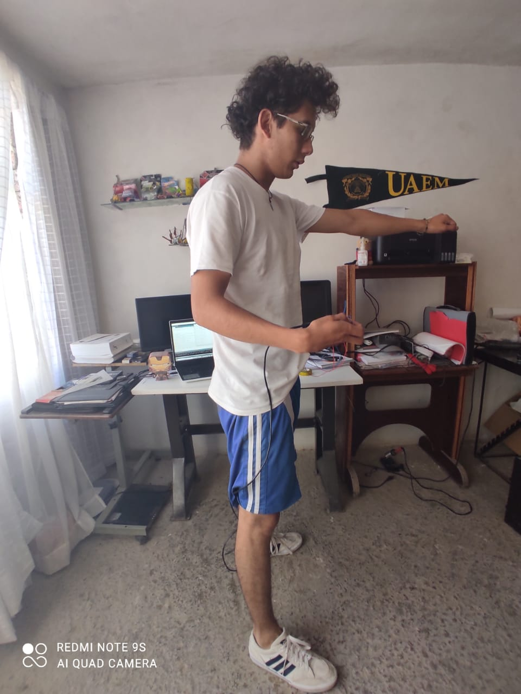
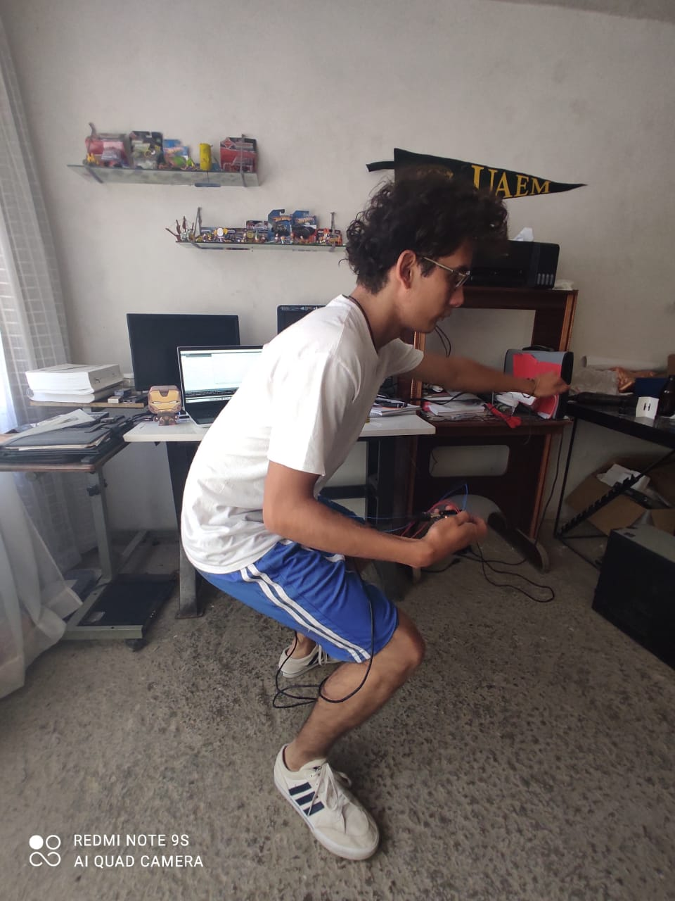
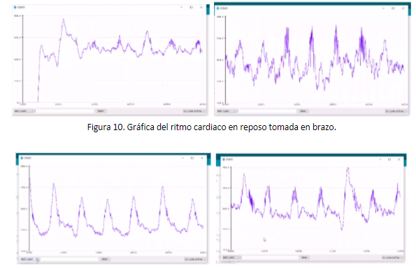

Nuestra investigación consistio en 3 variables de la siguiente manera:
La metodología se divide en las siguientes etapas:
Población beneficiada
1. Frecuencia cardiaca y las emociones
Para la primera serie de pruebas se empleo la ayuda de una persona con las siguientes características:
2. Medición de la respiración usando galgas extensiométricas
La respiración de la persona se toma de acuerdo con la presión ejercida en las galgas ubicadas en la parte delantera de la playera, de modo que conforme baja la resistencia del sensor la fuerza va aumentando. Las actividades a las que se somete una persona hacen variar de forma proporcional en conjunto con su ritmo cardiaco.
3. Rutinas diarias y datos generales de la persona
La variable de rutina nos ayuda a dividir las distintas personas de acuerdo con las actividades que se realizan del diario para reducir los patrones de actividades y de esa forma poder obtener una respuesta más exacta a la hora de clasificar su situación actual.
Pruebas con la camisa
- - -
Medición del ritmo cardiaco y respiración en reposo:
Medición del ritmo cardiaco y respiración en actividad física - Leve :
Medición del ritmo cardiaco y respiración en actividad física - Arduamente :
Resultados de las mediciones en general
Conclusión
Los resultados favorecieron la idea de interpretar la situación en la que una persona se encuentra realizando una actividad por medio de su ritmo cardiaco, respiración y rutina. La importancia de la investigación se centra en los motivos sociales de seguridad y empatía comunitaria, de modo que los esfuerzos deben ser en conjunto para poder llevar a cabo estas ideas a nivel más allá donde el ambiente de pruebas e investigación se convierta en interacción diaria de cada persona que tenga la posibilidad de usar nuestro dispositivo.
- - -
Para detalles de pruebas, metodología y más información puedes descargar nuestro informe de investigación tocando el siguiente enlace: